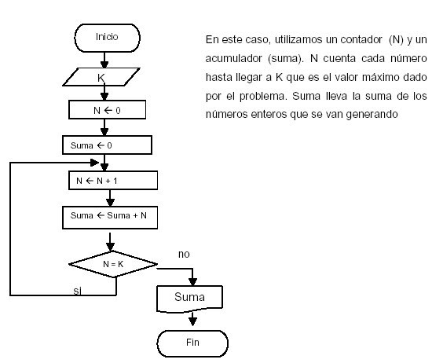

La programación es el proceso de diseñar, escribir y probar instrucciones específicas (código) que una computadora o sistema informático puede entender y ejecutar. Estas instrucciones están escritas en lenguajes de programación y se utilizan para crear software, aplicaciones y sistemas informáticos. Aquí hay algunos conceptos clave sobre la programación: Lenguajes de Programación: Los lenguajes de programación son conjuntos de reglas y símbolos que permiten a los programadores comunicarse con las computadoras. Ejemplos de lenguajes incluyen Python, Java, C++, JavaScript, y muchos otros. Algoritmos: Un algoritmo es un conjunto de pasos bien definidos que resuelven un problema o realizan una tarea específica. Los programadores diseñan algoritmos para lograr un objetivo. Desarrollo de Software: La programación es fundamental en el desarrollo de software. Los programadores escriben código para crear aplicaciones de software, sistemas operativos, sitios web y más. Resolución de Problemas: La programación implica la resolución de problemas. Los programadores identifican desafíos, diseñan soluciones y escriben código para implementar esas soluciones. Programación Orientada a Objetos (POO): La POO es un enfoque de programación que organiza el código en objetos, que son instancias de clases que contienen datos y funciones relacionados. Aplicaciones Prácticas: La programación se utiliza en una amplia gama de campos, incluyendo desarrollo de videojuegos, análisis de datos, desarrollo web, inteligencia artificial, automatización industrial y más. Aprender programación te permite crear soluciones tecnológicas y es una habilidad valiosa en la era digital. Puedes comenzar a aprender programación eligiendo un lenguaje de programación, tomando tutoriales en línea y prácticando con proyectos pequeños.
En mi poco conocimiento, y aplicando diferentes metodologías diría que empezar por el pseudocódigo y diagramas de flujo, para empezar a desarrollar la lógica de programación y así poder tener buenas bases para cuando se empiece a programar.
Elegir el lenguaje de programación con el que comenzar es una decisión importante. La elección depende de tus objetivos, preferencias y el tipo de desarrollo que te interese. Aquí tienes un texto que te ayudará a tomar una decisión informada: "Elegir el Lenguaje de Programación Ideal para Comenzar" La programación es un mundo fascinante lleno de posibilidades, pero al inicio, la variedad de lenguajes puede resultar abrumadora. Para tomar la decisión correcta, es fundamental considerar tus metas y preferencias. Python: Simplicidad y Versatilidad Si eres nuevo en la programación, Python es una excelente opción. Su sintaxis es legible y se utiliza en campos como desarrollo web, análisis de datos e inteligencia artificial. JavaScript: Dominio del Desarrollo Web Si tu interés se centra en la creación de sitios web interactivos, JavaScript es esencial. Complementa HTML y CSS para hacer que las páginas web cobren vida. Java: Robustez y Portabilidad Java es un lenguaje popular en desarrollo de aplicaciones empresariales y móviles. Su enfoque en la portabilidad lo hace valioso. C++: Programación de Bajo Nivel Si deseas adentrarte en programación de sistemas o desarrollo de videojuegos, C++ es una opción sólida. Ofrece un control más profundo sobre el hardware. Ruby: Productividad y Comunidad Activa Ruby es conocido por su elegante sintaxis y es ideal para desarrolladores que valoran la productividad y pertenecer a una comunidad activa. C#: Desarrollo en el Ecosistema de Microsoft C# es esencial si deseas crear aplicaciones para Windows o juegos con Unity. Tiene un sólido respaldo de Microsoft. En última instancia, la elección del lenguaje depende de tus intereses y metas. Comienza por definir qué tipo de desarrollo te atrae, investiga los lenguajes asociados y, lo más importante, ¡comienza a programar! El proceso de aprendizaje es valioso, independientemente del lenguaje que elijas, en este curso empezaremos por JavaScript.
JavaScript es un lenguaje de programación fundamental en el desarrollo web. Se utiliza para crear interactividad en sitios web y aplicaciones. Aquí hay algunos conceptos clave para comprender: Lenguaje Versátil: JavaScript es un lenguaje versátil que se ejecuta en el navegador web del usuario. Esto significa que no necesitas instalar nada especial para usarlo. Interacción en Tiempo Real: JavaScript permite crear experiencias interactivas en tiempo real en una página web. Puedes validar formularios, cargar contenido dinámicamente y responder a acciones del usuario. DOM (Document Object Model): JavaScript se utiliza para interactuar con el DOM, que es la representación de una página web en la memoria del navegador. Puedes cambiar el contenido, estilos y estructura de una página web con JavaScript. Eventos y Funciones: JavaScript se basa en eventos y funciones. Puedes escuchar eventos como clics de botón y ejecutar funciones específicas en respuesta. Esto permite controlar el flujo de tu aplicación. Librerías y Frameworks: Existen librerías y frameworks populares como jQuery, React, y Angular que simplifican el desarrollo con JavaScript. Estas herramientas facilitan la creación de aplicaciones web complejas. Aprendizaje Continuo: JavaScript es un lenguaje en constante evolución. A medida que nuevos estándares y características se introducen, aprender y mantenerse actualizado es esencial. Comunidad Activa: JavaScript tiene una comunidad activa y una abundancia de recursos en línea, lo que hace que sea accesible para aprender. En resumen, JavaScript es una herramienta esencial para cualquier desarrollador web. Te permite crear experiencias dinámicas y atractivas en la web. Si estás interesado en el desarrollo web, aprender JavaScript es un paso crucial en tu viaje.

Comenzar con HTML(un lenguaje de marcado) y CSS (estilos) es un gran punto de partida para desarrollar habilidades en diseño, Por dónde empezar 1. HTML: Aprender la estructura básica: Comienza con las etiquetas fundamentales de HTML, como html, head, y body. Comprende la estructura de un documento HTML. Etiquetas esenciales: Estudia etiquetas como h1, p, a, img, y ul, que son esenciales para crear contenido web. Formularios: Familiarízate con las etiquetas de formulario, como form, input, y button, para recopilar información del usuario. Práctica: Crea una página web simple utilizando lo que has aprendido. Agrega texto, imágenes y enlaces. 2. CSS: Seletores y propiedades: Aprende cómo seleccionar elementos HTML y aplicar estilos a través de propiedades como color, tamaño de fuente y margen. Diseño responsivo: Comprende cómo crear diseños que se adapten a diferentes tamaños de pantalla utilizando reglas de medios. Transiciones y animaciones: Explora cómo agregar efectos de transición y animaciones para hacer tu sitio más atractivo. Flexbox y Grid: Estudia técnicas de diseño más avanzadas como Flexbox y Grid para controlar la disposición de elementos en la página. Práctica continua: Aplica tus conocimientos a proyectos personales, como crear una página de perfil o un portafolio. 3. Recursos adicionales: Tutoriales en línea: Utiliza tutoriales en línea, como videos de YouTube y cursos en sitios web de programación, para aprender más. Documentación: Consulta la documentación oficial de HTML y CSS para obtener información detallada sobre etiquetas y propiedades. Comunidad: Únete a comunidades en línea y foros de desarrollo web para hacer preguntas y recibir retroalimentación. Con dedicación y práctica constante, estarás en el camino correcto para convertirte en un desarrollador web competente. ¡Disfruta del proceso de aprendizaje!
ARMENIA QUINDIO
TELEFONO: 3052076713
POLÍTICA DE SEGURIDAD
ACERCA
EMAIL: brayan324554@gmail.com
@2023